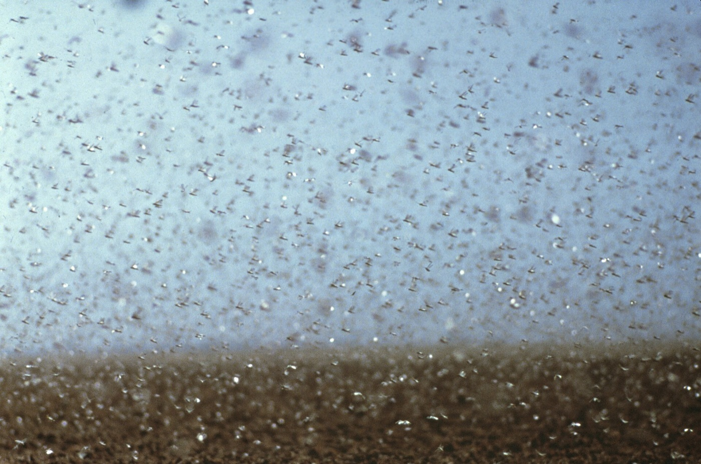

Задача трёх тел · глава 34 из 35
Жуки

Кратко
Ши Цян находит Ван Мяо и Дин И пьяными и опустошёнными: без фундаментальной физики человечество обречено топтаться на месте, как древняя цивилизация, никогда не дошедшая бы до ракет. Они пьют за «жуков» — за себя — и за конец света. Да Ши не принимает капитуляции и везёт их в Хэбэй, на пшеничные поля, кишащие саранчой. Он спрашивает: больше ли разрыв между людьми и трисолярианцами, чем между людьми и саранчой? Люди веками пытались истребить насекомых — и так и не смогли. Ван и Дин решают вернуться в город: впереди ещё много работы.
Главные моменты
- Два учёных сдаются — и пьют за конец света.
- Полицейский вытаскивает их из отчаяния так же, как в главе 10.
- Саранча на пшенице: «жуки», которых никто не победил.
- Возвращение к работе как акт сопротивления.
Значение
Значение главы может забегать вперёд — показать
Нравственный ответ романа на «Вы — жуки!»: унижение превращается в надежду. Эта сцена — одна из самых любимых читателями во всей трилогии.